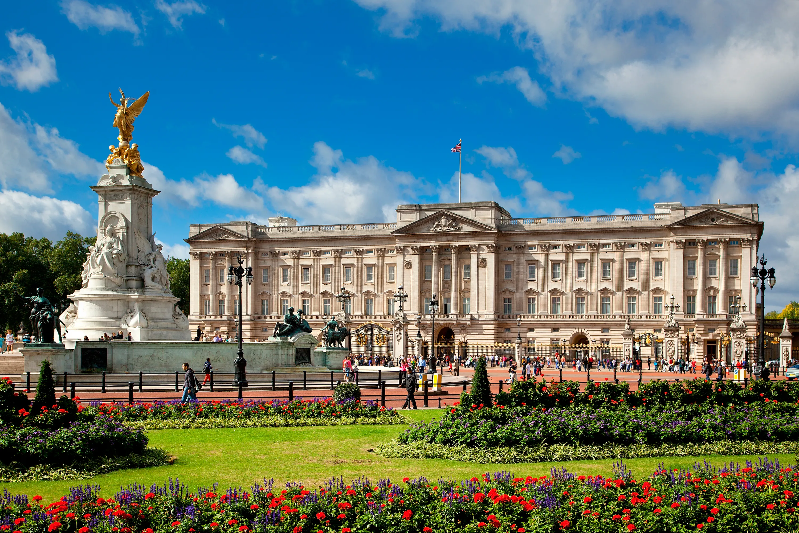
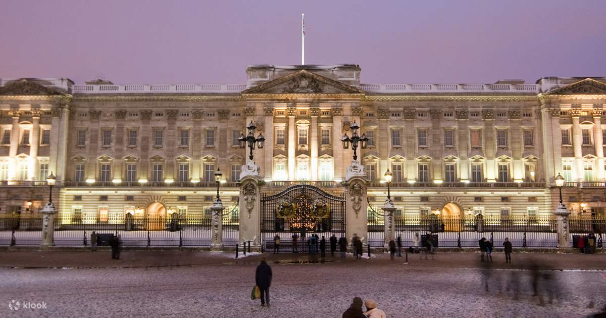
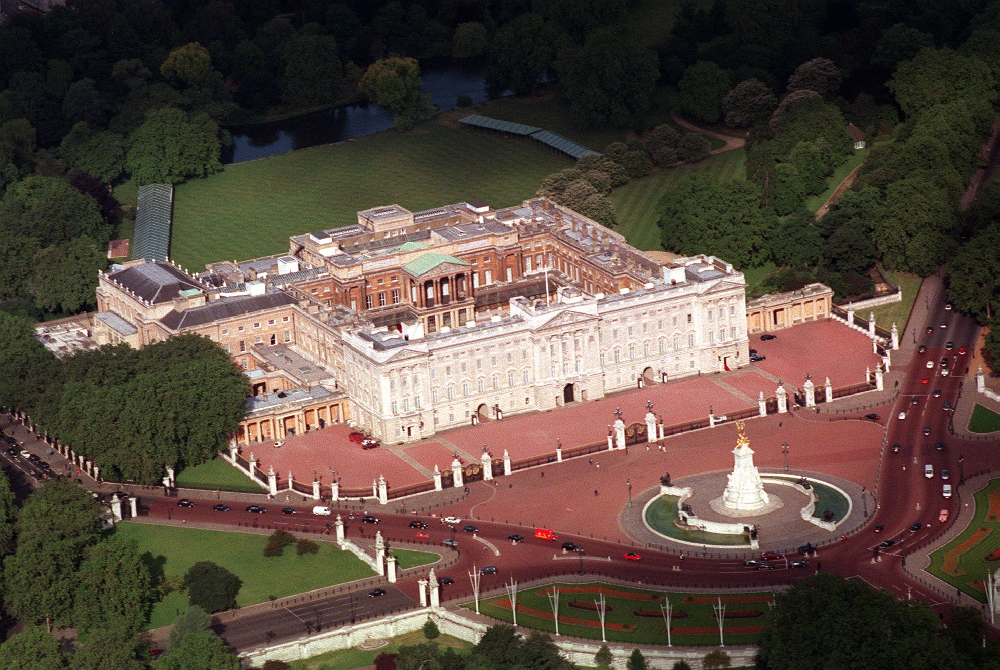
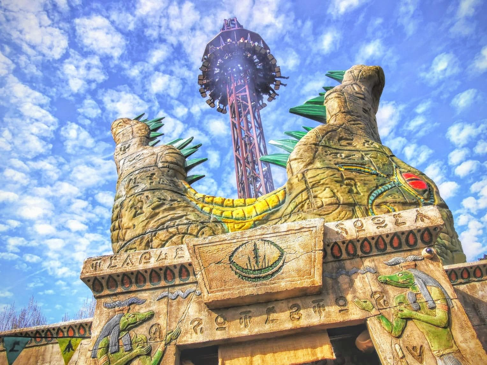
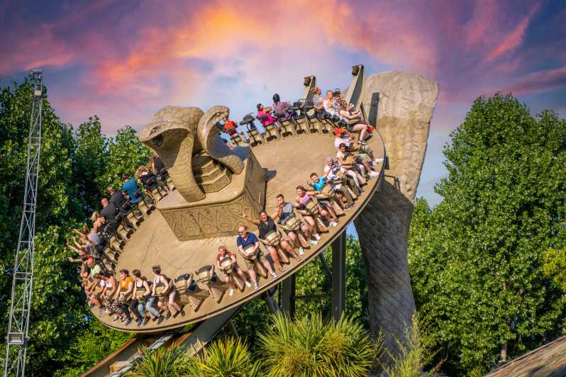
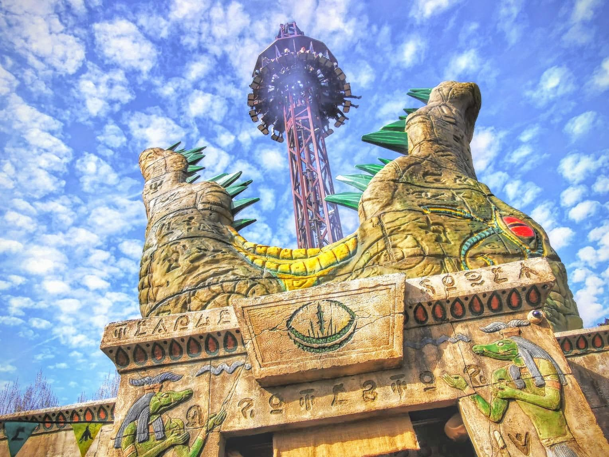
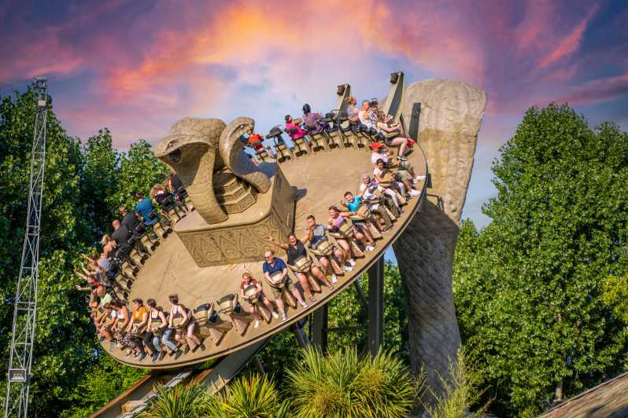

Let's Travel
You Are Going To Love London!
Buckingham Palace
  
Originally known as Buckingham House, the building at the core of today's palace was a large townhouse built for the Duke of Buckingham in 1703 on a site that had been in private ownership for at least 150 years. It was acquired by King George III in 1761 as a private residence for Queen Charlotte and became known as The Queen's House. During the 19th century it was enlarged by architects John Nash and Edward Blore, who constructed three wings around a central courtyard. Buckingham Palace became the London residence of the British monarch on the accession of Queen Victoria in 1837.
Chessington Adventures
Chessington World of Adventures Resort is a theme park, zoo and hotel complex in Chessington, Greater London, England, around 12 miles (19 km) southwest of Central London. The complex opened as Chessington Zoo in 1931, with the theme park being developed alongside the zoo by The Tussauds Group and opening on 7 July 1987, as one of the first themed amusement parks in Britain.[1] The theme park, which features over 40 rides, is now owned by Merlin Entertainments,following its merger with The Tussauds Group in 2007.Under Merlin, Chessington has been increasingly developed into a resort tourist destination, including two on-site hotels, a high ropes course and camp site.
Chessington Zoo has over 1,000 animals, including western lowland gorillas, sea lions, and Sumatran tigers. It is split up into several areas: Trail of the Kings, Sealion Bay, Children's Zoo, Amazu, Penguin Bay and the Wanyama Village and Reserve as well as a Sea Life Centre.
Chessington World Of Adventures is usually the 4th most visited park in the UK with an attendance of 1.69m in 2019 however in 2020 due to the coronavirus pandemic and a shortened operating season along with limited park capacity the park had a huge drop in attendance and became the 3rd most visited park in 2020 behind Thorpe Park.
Chessington World of Adventures theme park consists of themed areas loosely styled on a range of world cultures. Adventure Point is an English market square, Mexicana borrows from the Wild West, Shipwreck Coast a nautical adventure land, Wild Woods a European street with Bavarian architecture, Forbidden Kingdom mirrors Egypt and Arabia, while Land of the Tiger reflects the orient, and Wild Asia an Indian jungle. Major attractions include: Vampire, Dragon's Fury, KOBRA, Tiger Rock, Scorpion Express, Zufari: Ride into Africa!, The Gruffalo River Ride Adventure and Croc Drop.
 
 